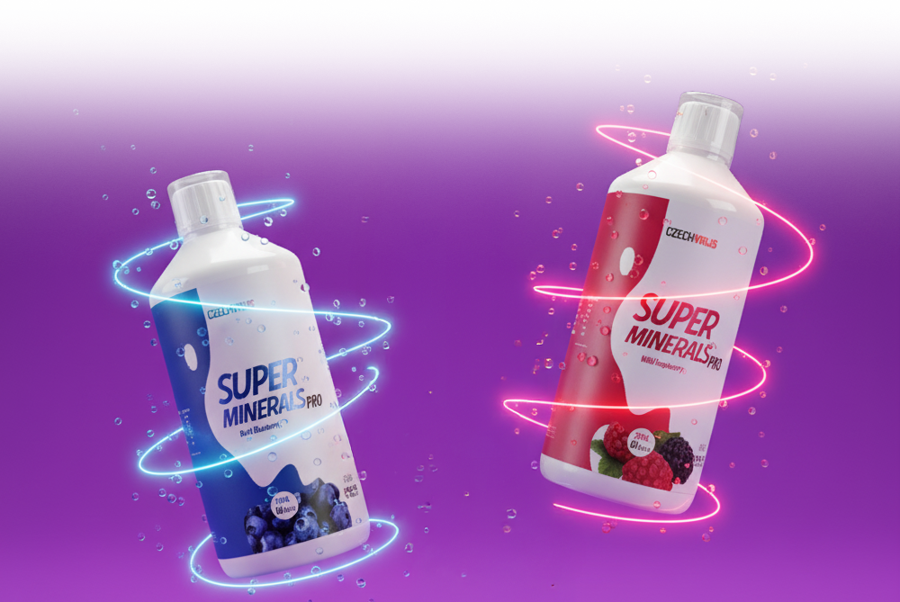
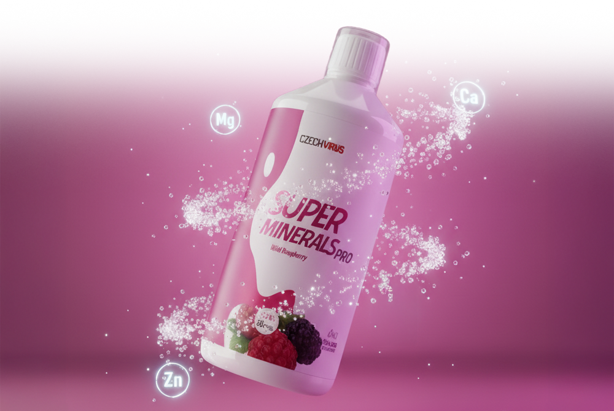
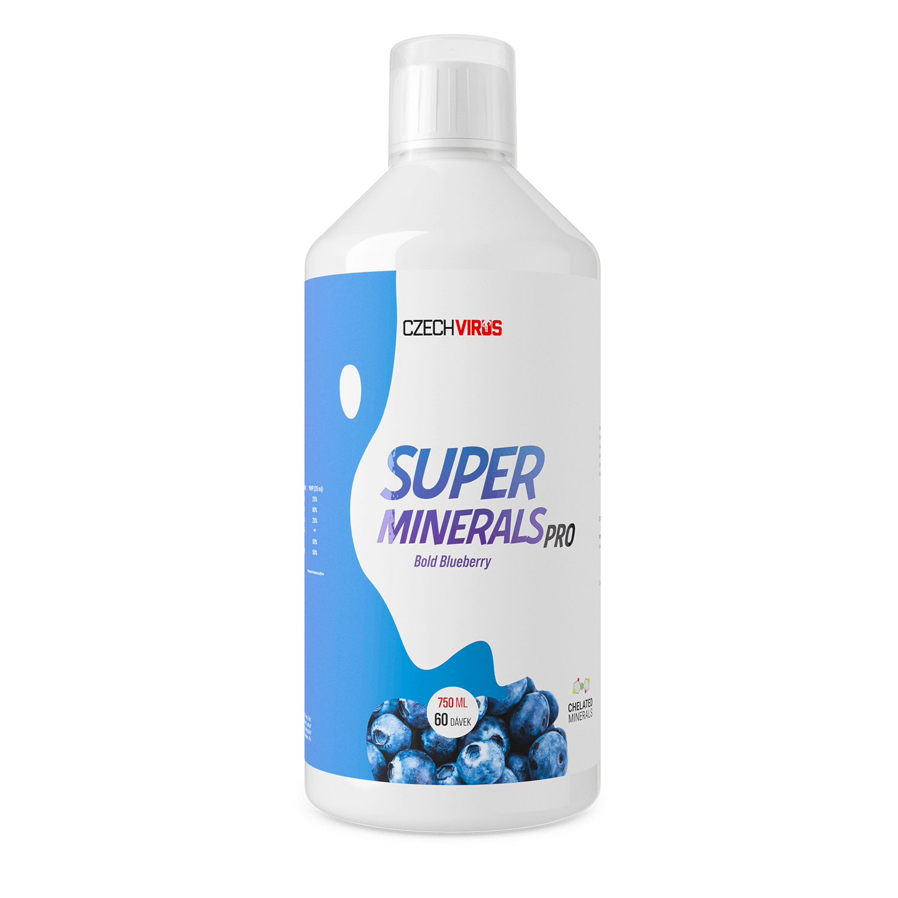
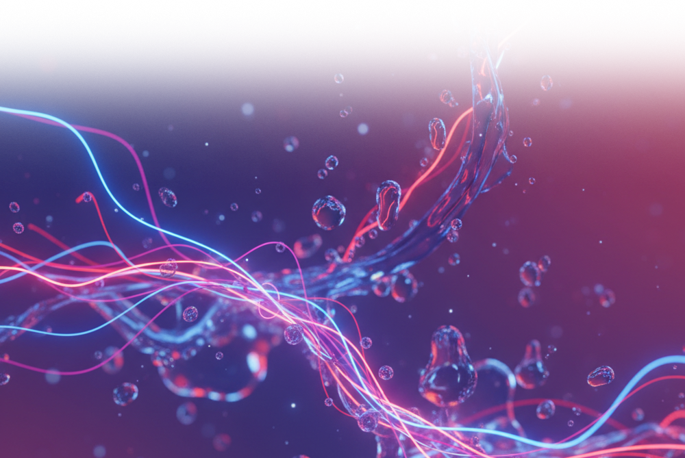
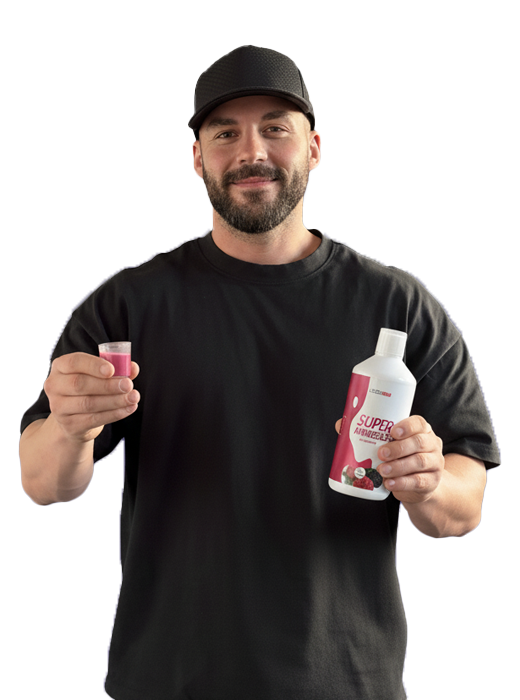

Vyvážený komplex minerálů a elektrolytů pro každodenní energii, rovnováhu a správné fungování organismu. To je SuperMinerals PRO – moderní multiminerální formule s hořčíkem, draslíkem, vápníkem, zinkem, mědí a Aquaminem® – přírodním zdrojem 72 stopových prvků.
Tekutá forma zajišťuje rychlé vstřebání a jednoduché dávkování. Podporuje energii, hydrataci, nervový systém, svalovou činnost i imunitu.

SuperMinerals PRO je moderní multiminerální formule kombinující klíčové minerály a elektrolyty v dobře vstřebatelných formách. Spojuje hořčík, draslík, vápník, zinek, měď a Aquamin® – přírodní komplex 72 stopových prvků – aby podpořil energii, hydrataci, nervový systém, svalovou činnost i imunitu v jedné denní dávce.



